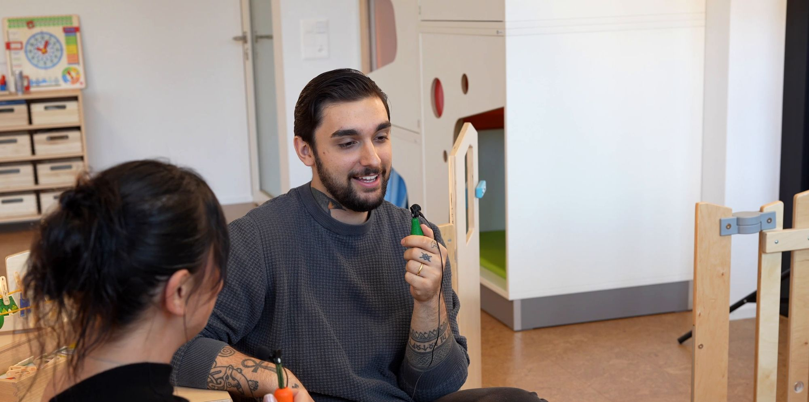

Unternehmer.Schulgründer.Hauptmann.
Ich mache Politik neben der Arbeit, wie die meisten in diesem Land. Ein öffentliches Amt habe ich nicht.

Mein Weg
Sinan Güzelsahin, Jahrgang 1998, ist Unternehmer, Schulgründer und Hauptmann der Schweizer Armee. Er ist in Brunegg aufgewachsen und lebt in Aarau. Er ist FDP Delegierter und sitzt im Vorstand der FDP Aarau und des FORUM AARGAU.
- 1998Geboren. Aufgewachsen in Brunegg.
- 2017Lehrabschluss als Kaufmann EFZ im Handel.
- 2018Rekrutenschule in Spiez. Mit 19 Offizier.
- 2025Gründung der Lorien Group in Aarau.
- 2025Kandidatur bei den Wahlen in Aarau.
- 2025Gründung der Acton Academy Dübendorf AG. Ich präsidiere den Verwaltungsrat.
- 2026Wahl in den Vorstand der FDP Aarau.
- 2026Die Acton Academy Dübendorf öffnet im August.
Wo ich mitarbeite
Partei
- FDP Delegierter
- Vorstand FDP.Die Liberalen Aarau
- Vorstand FORUM AARGAU
- Jungfreisinnige Aarau-Lenzburg-Kulm
Beruf
- Gründer und Inhaber der Lorien Group
- Verwaltungsratspräsident der Acton Academy Dübendorf AG
Armee
- Hauptmann im Bataillonsstab
- Aarauer Offiziersgesellschaft
Ich habe kein öffentliches Amt. Meine Arbeit in der Partei ist Milizarbeit im Vorstand und als Delegierter.
Kandidatur 2025
1'065
Stimmen. Aarau, 2025.
2025 habe ich in Aarau kandidiert. Gewählt wurde ich nicht. 1'065 Menschen haben mir ihre Stimme gegeben, dafür danke ich ihnen.
- rund 50Plakatstandorte
- 8Flyer-Aktionen in der Stadt
- über 1'900Geschäftsadressen im Newsletter
Ausbildung
- Kaufmann EFZ
- Bachelor in Philosophy, University of London
- MBA, Simon Business School
- Executive MBA, Universität Bern
- HBS Online, CORe
Redenwir.
Eine Einladung oder ein Thema, das liegen bleibt: Schreiben Sie mir. Ich antworte selbst.